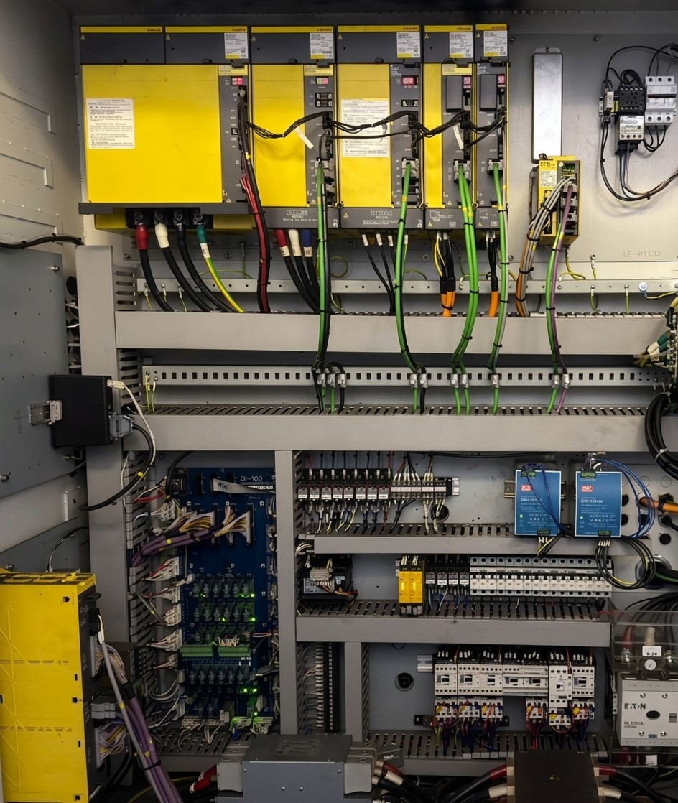

La alarma Fanuc 910: I/O ERROR / COMMUNICATION FAULT

La alarma Fanuc 910 aparece cuando el control CNC detecta un fallo en la comunicación con módulos internos o dispositivos externos, afectando al funcionamiento general de la máquina.
Estado de la máquina: Funcionamiento limitado o parada.
Causa: Fallo de comunicación o sistema I/O.
Solución rápida: Revisar conexiones y configuración.
Nivel de urgencia: Alta.

Los fallos en módulos de entrada/salida, conexiones o cableado pueden provocar errores de comunicación en el sistema CNC, generando la alarma Fanuc 910 y afectando al control de la máquina.
La alarma Fanuc 910 puede provocar pérdida de comunicación entre el control y los dispositivos de la máquina, generando comportamientos impredecibles.
"Un fallo de comunicación puede impedir el control correcto de ejes y periféricos, generando situaciones de riesgo."
Consecuencia: Desde fallos intermitentes hasta pérdida total de control de la máquina o parada completa.
Se recomienda detener la máquina y revisar el sistema de comunicación antes de continuar la operación.
¿Necesita Asistencia Técnica?
En CNC Systems contamos con experiencia en diagnóstico de sistemas de comunicación y control FANUC.
📞 No dude en ponerse en contacto con nosotros.
Servicio técnico CNC multimarca en maquinaria y controles industriales.
Las marcas mencionadas pertenecen a sus respectivos propietarios. CNC Systems no es servicio técnico oficial de dichas marcas.